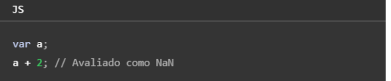
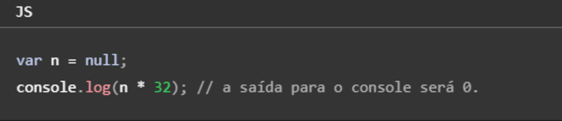
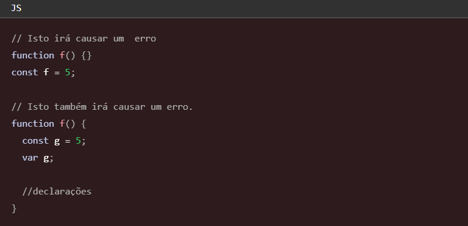

Para criar as variáveis usamos nomes simbólicos para os valores em sua aplicação, o nome das variáveis não podem começar com números, porém podem começar com uma letra qualquer (maiúscula ou minúscula), sublinhado (_), ou cifrão ($), já os carateres subsequentes podem ser números. Exemplo: (nome / _idade / $salario / vaga1).
Podemos declarar uma variável de duas formas:
Se você criar uma variável e não especificar o valor inicial, ela irá ter o valor undefined, já se você tentar acessar um variável inexistente, resultará no lançamento de uma exeção ReferenceError, exemplo:
Você pode usar undefined para determinar se uma variável tem um valor. No código a seguir, não é atribuído um valor de entrada na variável e a declaração if será avaliada como verdadeira (true).
O valor undefined se comporta como falso (false), quando usado em um contexto booleano. Por exemplo, o código a seguir executa a função myFunction devido ao elemento myArray ser indefinido:
O valor undefined coverte-se para NaN (Not A Number) quando usado no contexto numérico.

Quando você avalia uma variável nula (null), o valor nulo se comporta como 0 em contexto numéricos, e como falso (false) em contextos booleanos.

Constantes
Você pode criar uma constante apenas de leitura por meio da palavra-chave const. A sintaxe de um identificador de uma constante é semelhante ao identificador de uma variável: o nome de uma constante não pode começar com números, porém podem começar com uma letra qualquer (maiúscula ou minúscula), sublinhado (_), ou cifrão ($), já os carateres subsequentes podem ser números. Uma constante não pode alterar seu valor por meio de uma atribuição ou ser declarada novamente enquanto o script está em execução, deve ser inicializada com um valor.
As regras de escopo para as constantes são as mesmas para as váriaveis let de escopo de bloco. Se a palavra-chave const for omitida, presume-se que o identificador represente uma variável. Você não pode declarar uma constante com o mesmo nome de uma função ou variável que estão no mesmo escopo.

Tipos primitivos
Os tipos primitivos em JavaScript são valores simples e imutáveis, são usados para representar informações básicas e usuais, existem 7 tipos de dados:
Eles só podem armazenar um único dado, não têm métodos e são imutáveis. A variável pode ser reatribuída a um novo valor, mas o valor primitivo existente não pode ser alterado como fazemos com arrays ou objetos. Para saber qual é o tipo primitivo do elemento, utilizamos typeof.